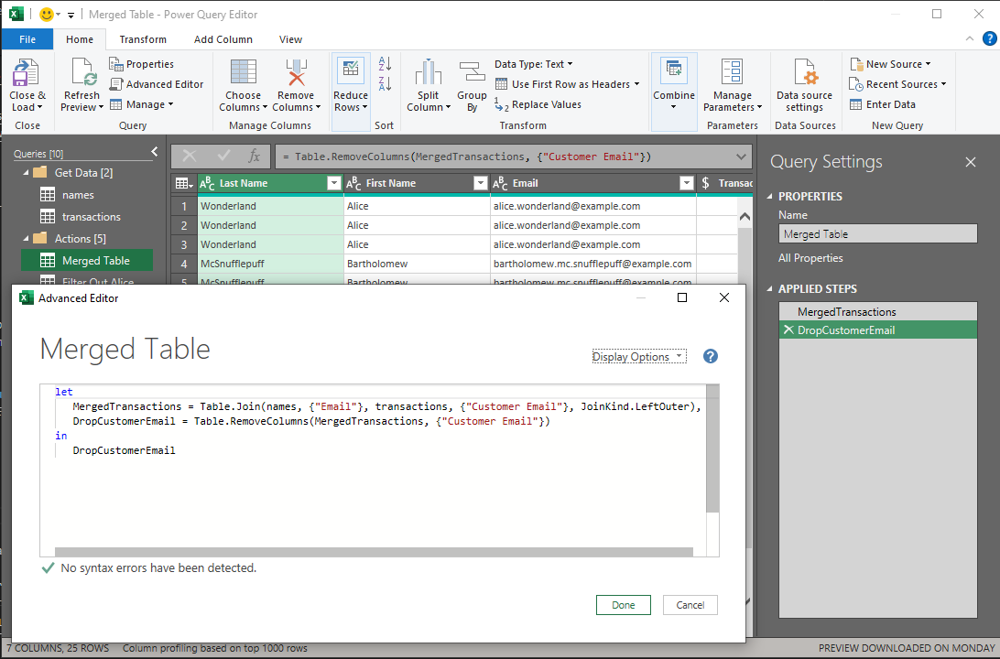
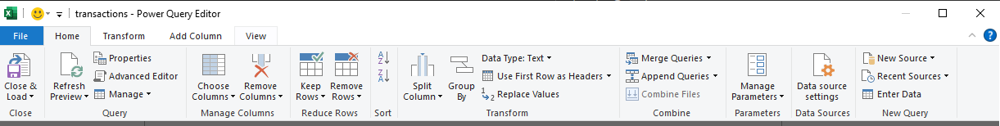
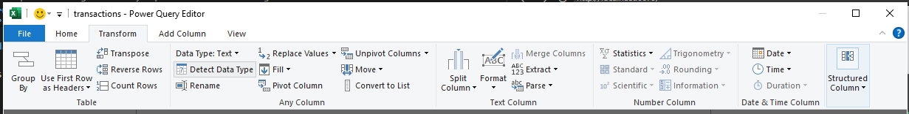
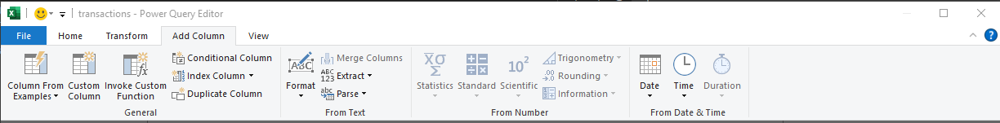

---
title: Data Pipeline
---
flowchart TB
A[data entry] --> D{data ingestion}
B[sensors] --> D
C[applications] --> D
D --> E["data warehouse"]
E --> F{Extract Transform Load}
F --> G[reports]
F --> H[dashboards]
F --> I[predictive models]
Excel PowerQuery Intro
A quick review of relational database
- Relational Database (RDBMS)
- Relational model:
- Developed by Edgar F. Codd
- Based on the mathematical concept of relations
- SQL (Structured Query Language):
- Initially called SEQUEL (Structured English Query Language)
- Based on relational algerbra
- Examples of RDBMS:
- Oracle
- Postgres
- MySQL
- Elements of modern RDBMS:
- Tables (Tables): collection of relations
- Columns (Fields / Attributes): a variable (with the associated data type).
- Rows (Record): a distinct collection of attributes
- Primary Key: a column that contains a unique value for each record
- Foreign Key: a column that references the primary key in another table
- Index: additional data structure that associates an identifier with a row and/or a column (Excel row or column number)
- Relational model:
Codd’s Third Normal Form (3NF):
- Developed to improve the efficiency of a database system.
- No repeating groups of data. Separate repeating data into tables.
| Student | College | Major | Score | |
|---|---|---|---|---|
| Alice | L&S | Computer Science | 60 | |
| Alice | L&S | Computer Science | 70 | |
| Bob | Ag | Economics | 65 | |
| Cathy | CBS | Biology | 90 |
=>
| Student | Test | Score |
|---|---|---|
| Alice | Midterm | 60 |
| Alice | Final | 70 |
| Bob | Midterm | 65 |
| Cathy | Midterm | 90 |
| Student | College | Major |
|---|---|---|
| Alice | L&S | Computer Science |
| Bob | Ag | Economics |
| Cathy | CBS | Biology |
- All non-key columns are only dependent on the primary key.
| Student | College | Major |
|---|---|---|
| Alice | L&S | Computer Science |
| Bob | Ag | Economics |
| Cathy | CBS | Biology |
→
| Student | Major |
|---|---|
| Alice | Computer Science |
| Bob | Economics |
| Cathy | Biology |
| College | Major |
|---|---|
| L&S | Computer Science |
| Ag | Economics |
| CBS | Biology |
- No transitive dependence. If field A is dependent on B, and B is dependent on C, then one of the relations can be extracted into another table.
| Student | College | Major | Major Code |
|---|---|---|---|
| Alice | L&S | Computer Science | LCOM |
| Bob | Ag | Economics | AECO |
| Cathy | CBS | Biology | CBIO |
→
| Student | Major Code |
|---|---|
| Alice | LCOM |
| Bob | AECO |
| Cathy | CBIO |
| Major | Major Code |
|---|---|
| Computer Science | LCOM |
| Economics | AECO |
| Biology | CBIO |
| College | Major |
|---|---|
| L&S | Computer Science |
| Ag | Economics |
| CBS | Biology |
Hadley Wickham’s tidy data:
An influential article on how to structure data for statistical learning and analysis.
What makes a dataset “tidy”: 1. Each variable forms a column. 2. Each observation forms a row. 3. Each type of observational unit forms a table.
Example of a messy data set (also known as wide format)
| year | artist | track | time | date.entered | wk1 | wk2 | wk3 |
|---|---|---|---|---|---|---|---|
| 2000 | 2 Pac | Baby Don’t Cry | 4:22 | 2000-02-26 | 87 | 82 | 72 |
| 2000 | 2Ge+her | The Hardest Part Of … | 3:15 | 2000-09-02 | 91 | 87 | 92 |
Example of a tidy data set (also known as tall format)
| year | artist | time | track | date | week | rank |
|---|---|---|---|---|---|---|
| 2000 | 2 Pac | 4:22 | Baby Don’t Cry | 2000-02-26 | 1 | 87 |
| 2000 | 2 Pac | 4:22 | Baby Don’t Cry | 2000-03-04 | 2 | 82 |
| 2000 | 2 Pac | 4:22 | Baby Don’t Cry | 2000-03-11 | 3 | 72 |
| 2000 | 2Ge+her | 3:15 | The Hardest Part Of … | 2000-09-02 | 1 | 91 |
| 2000 | 2Ge+her | 3:15 | The Hardest Part Of … | 2000-09-09 | 2 | 87 |
| 2000 | 2Ge+her | 3:15 | The Hardest Part Of … | 2000-09-16 | 3 | 92 |
Data pipeline
ETL Extract, Transform, Load
- Actions to transform data into Codd’s 3NF:
- Create new tables by subsetting columns (SELECT) and remove duplicates (DISTINCT)
- Update the original columns by creating new foreign key columns (ADD COLUMN) and remove redundant columns
- Actions to transform data from Codd’s 3NF:
- Merge (known as JOIN in relational algebra)
- Tools for extracting and transforming data:
- Pivot (transform data from tall to wide)
- Unpivot (transform data from wide to tall)
- Stack (create hierarchical index)
- Unstack (convert hierarchical index into columns)
- Splitting columns
- Combining columns
Using PowerQuery to perform ETL
Q: What is Power Query?
A: Microsoft’s Data Connectivity and Data Preparation technology that lets you seamlessly access data stored in hundreds of sources and reshape it to fit your needs—all with an easy to use, engaging, no-code experience.
Q: How does the query work?
A: A query workflow (called an M Script) reads the data source and performs transformations on the data according to the query and loads the output.
flowchart LR
A[M Script] --->|1.read| B[Power Query Engine]
B --->|2.requests| C[Data Source]
C --->|3.sends data| B
B --->|4.loads data| D[Output]
- A query (M Script) is reusable. (You can run the same query with updated source files to get updated results.)
- Each step of a query transformation is viewable for troubleshooting.
- The query is portable. (Because it’s a documented workflow and not a sequence of user actions, it can be shared with others.)
- The underlying M Script is available to check for correctness and reproducibility.
- Coding is not required.
- Coding can be done to perform more complex analysis.
Excel Version
- It is recommended to use the latest version of Excel to access all the latest features. Download from office.ucdavis.edu.
- Sample files for this reader are listed here:
Sourcing data
- Data sources can be other Excel files, files, a database connection, or other data sources.
How to:
- Go to the Data tab.
- Click on the top left button Get Data (Power Query).
- Choose the data source. (For this example, import from Excel and connect to the source data file.)
- Promote headers if the first row of data contains headers. Otherwise, manually rename columns.
- To change the Data Type of a column, click on the column and then click the Data Type button.
Key buttons
- In the Data ribbon, click on Queries & Connections to quickly see a list of queries.

- Right-click on a query and click Edit to open the Power Query Editor, or click Load To to change the destination sheet for the query.
- In the Power Query Editor, check the APPLIED STEPS to sequentially see how each transformation step is carried out.
- In the Power Query Editor, click on Advanced Editor to see the M Script Code. The code can be copied/pasted as a quick way to share the query.

Best practices
- Always confirm column names, set data types for each columns. (Make sure to always set dollar values as Currency.)
- Set key columns as needed.
- Perform subsequent queries by referencing on the initial connection. Minimize the number of outside connections.
- In the PowerQuery Editor, right-click on the query and create a reference.
Example:
- Load data from the names.xlsx file and from the transactions.xlsx file by using the Get Data button in the Data ribbon.
- Create a reference to the initial query by right-clicking on the query and choose Reference. Avoid making multiple queries to the same source.
Merging tables (JOIN)
- Primer on SQL JOIN (Wikipedia)
- PowerQuery References on Table.Join
- To merge the names and transactions tables:
- Select the left table (the first table selected is the left table)
- Click the Merge Queries button.
- Select the second table to merge (this is the right table)
- Select the index column to merge on.
- Press Ok.
- If the merge results in a nested column, you can expand the nested column as needed by clicking on the button in the column name.

Some Types of Joins available
- Full Outer Join
| Left Index | Left Value |
|---|---|
| A | 10 |
| B | 20 |
| C | 30 |
| Right Index | Right Value |
|---|---|
| B | 200 |
| C | 300 |
| D | 400 |
→
| Index | Left Value | Right Value |
|---|---|---|
| A | 10 | null |
| B | 20 | 200 |
| C | 30 | 300 |
| D | null | 400 |
- Inner Join
| Left Index | Left Value |
|---|---|
| A | 10 |
| B | 20 |
| C | 30 |
| Right Index | Right Value |
|---|---|
| B | 200 |
| C | 300 |
| D | 400 |
→
| Index | Left Value | Right Value |
|---|---|---|
| B | 20 | 200 |
| C | 30 | 300 |
- Left Outer Join
| Left Index | Left Value |
|---|---|
| A | 10 |
| B | 20 |
| C | 30 |
| Right Index | Right Value |
|---|---|
| B | 200 |
| C | 300 |
| D | 400 |
→
| Index | Left Value | Right Value |
|---|---|---|
| A | 10 | null |
| B | 20 | 200 |
| C | 30 | 300 |
- Left Anti Join
| Left Index | Left Value |
|---|---|
| A | 10 |
| B | 20 |
| C | 30 |
| Right Index | Right Value |
|---|---|
| B | 200 |
| C | 300 |
| D | 400 |
→
| Index | Left Value |
|---|---|
| A | 10 |
Example:
To merge the names and transactions tables: 1. Select the “names” table (the first table selected is the left table) 2. Click the Merge Queries button. 3. Select the “transactions” table to merge (this is the right table) 4. Select the index column (use the Email column) to merge on. 5. Press Ok. 6. If the merge results in a nested column, you can expand the nested column as needed by clicking on the button in the column name.
Filter rows
- Keep or remove duplicates by clicking on the Keep Rows button or the Remove Rows button.
- Filter row by clicking on the filter button on the column name.
Example:
- Filter out Alice by clicking the Email Column and unchecking alice.wonderland@example.com
Combining columns, splitting columns, create new columns based on other columns, or remove columns
- To merge multiple columns: select the columns, then click the Merge Columns button in the Transform panel.
- To split a column: select the column, then click the Split Column button in the Transform panel.
- Create new columns:
- Conditional columns, in the Add Column panel, click the Conditional Column button, and fill out the condition.
- Custom Column: click the Custom Column button, and fill out the formula.
- The Column From Examples tool can help with generating formulas, but it’s important to make sure that the formula is correct before proceeding.
- Remove columns:
- Click on the Choose Columns or Remove Columns button.


Example
- Combine the Last Name and the First Name by selecting both Columns and click the Merge Columns button.
- Create new columns called Month and Year by selecting the Transaction Date column, then click the Date button, and then choose “Year” and “Month” respectively.
- Sort the records by the Transaction Date and clicking the button on the column name and sort accordingly.
- Remove the Transaction Date column by selecting the column first, then clicking the *Remove Columns** button.
Aggregate data with GROUP BY
- In the Transform Panel, click on the Group By button, choose the Advanced option, then add the columns to grouping (the order of grouping matters).
- For aggregation, choose the New column name, the Operation to aggregate the data, and the Column the operation is performed on. It’s possible to aggregate on multiple columns.
- Columns not used in grouping or aggregation are dropped fro the output.
Example:
- Group the table by Name, Vendor, Month, Year, use “Transactions Amount Per Vendor” as the new column name, Sum as the Operation, and use “Transaction Amount” as the Column.
Pivot and Unpivot data
- Select the column to pivot (change from tall to wide format), then click on the Pivot Column button. Choose the Values Column to use for the nuw columns. If aggregation is needed, click on the Advanced Options to aggregate the values.
Example:
- Select the Vendor column, then click on the Pivot Column button, use “Transactions Amount Per Vendor” as the Values Column, and Aggregate using Sum.
Custom queries (Power Query M formula language)
In addition to all the button actions available (not all are covered here), you can create more complex queries by using the M Query Language directly.
Example:
- An example of a custom function called “GetRunningTotal” is included in the file.
Exporting
There are many ways to export the data, including: * Power BI * Power Pivot * Copy/Paste to other documents.